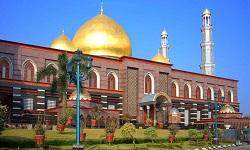
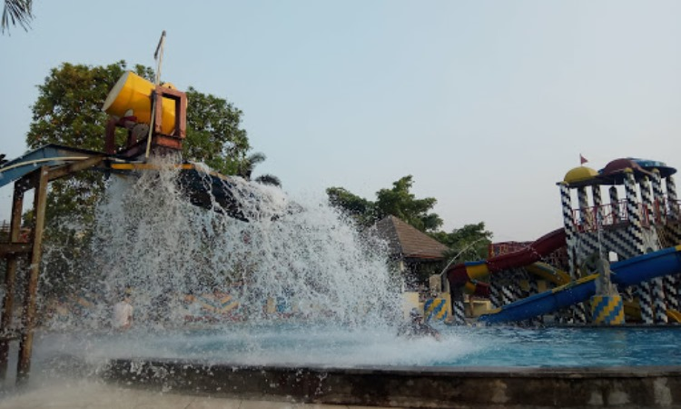

Nama tempat wisata yang pertama ini memang unik. Cocok untuk mereka yang mencari suasana tenang, damai dan terasa sejuk setelah beraktivitas cukup padat dalam satu minggu penuh.Kampung 99 Pepohonan ini merupakan tempat hunian sekaligus rekreasi yang berkonsep menyatu dengan alam. Lokasi ini juga dikenal dengan nama kampung Rusa yang dekat dengan Masjid Dian Al Mahri. Kampung 99 Pepohonan ini berada di Jalan KH Muhasan II, kelurahan Maruyung Kecamatan Limo. Wisatawan bisa datang dengan anak-anak kecil yang akan menyukai lingkungan ini.
Detail Nama tempat wisata yang pertama ini memang unik. Cocok untuk mereka yang mencari suasana tenang, damai dan terasa sejuk setelah beraktivitas cukup padat dalam satu minggu penuh.
Detail Nama tempat wisata yang pertama ini memang unik. Cocok untuk mereka yang mencari suasana tenang, damai dan terasa sejuk setelah beraktivitas cukup padat dalam satu minggu penuh.
Detail